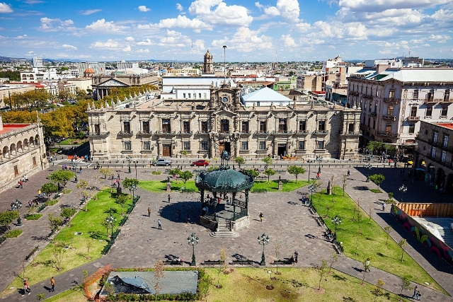
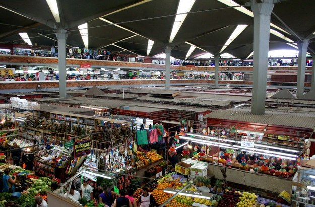
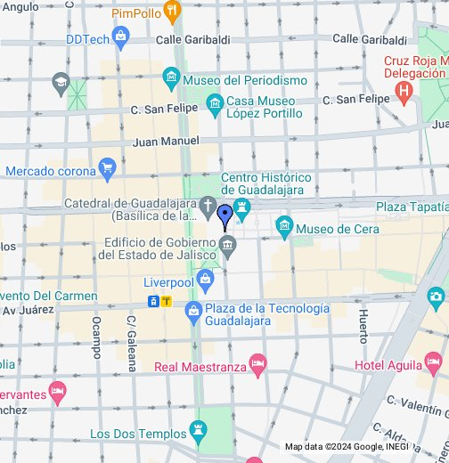

Centro de Guadalajara
El Centro Histórico de Guadalajara es un barrio de la capital del estado de Jalisco.
Allí se fundó la ciudad el 14 de febrero de 1542 y se construyó la primera iglesia.
Limita por el norte con los barrios Santuario y El Retiro; por el oriente con los barrios La Perla, Sagrado Corazón, San Juan de Dios y Analco; por el sur con Mexicaltzingo; y al occidente con los barrios Americana Oriente y Capilla de Jesús.
Es un importante centro turístico, educativo y comercial.

¿Que hacer en el Centro de Guadalajara
El centro de Guadalajara guarda en cada esquina una tradición arraigada en los tapatíos que los visitantes ( y locales) deben de hacer para vivir esta parte tan importante de la ciudad. Si visitas la ciudad estas son de las actividades que hacer en el centro de Guadalajara.
1.Visitar el Hospicio Cabañas
entrada-casa-cultural-cabañas
El imponente y hermoso edificio que se encuentra al fondo del andador morelos es una visita obligada ya sea por su historia , murales o arquitectura.
2.Comer un bionico o una Escamocha
bionico
Una de la delicias escondidas debajo de Plaza Guadalajara , prueba los bionicos o una escamocha. Bajo la plaza Guadalara que se encuentra frente a la catedral.
3.Visitar la rotonda de los Jalisciences ilustres
rotonda-jalisciences-ilustres
La Rotonda a los jaliscienses ilustres rinde homenaje a la memoria de los jaliscienses que han trascendido a través de la historia. Ubicado en Hidalgo esquina con 16 de septiembre.
4.Entrar al Palacio del Gobierno de Jalisco
palacio-de-Gobierno-Jalisco
Ver los murales de Orozco en la escalera y en la sala de congreso del palacio del gobierno de jalisco es una parada obligada en el centro de Guadalajara. En la calle Ramon Corona esquina con Morelos.
5.Comprar en San Juan de Dios
San Juan de dios
En el mercado libertad popularmente conocido como san Juan de Dios se vende de todo , Dulces típicos , ropa , comida y tecnología . Para llegar tienes que llegar a la calzada independencia esquina con Javier Mina.
6.Probar Las tortas Ahogadas
Torta-ahogada-guadalajara
La torta ahogada es el platillo típico de la ciudad preparado con birotes que solo aquí se pueden encontrar , bañadas en salsa de Jitomate o puro chile.
7.Tomarte una cerveza en la Fuente
bicicleta-la-fuente-copy
La fuente es una de las cantinas más antiguas de la ciudad con la bicicleta que caracteriza al lugar. Ubicada en Pino Suárez 78, entre Hidalgo e Independencia.
8.Entrar a la Catedral de Guadalajara
CAtedral
Un edificio que inicio su construccion en 1561 y que sus cupulas son tan representativas de la ciudad que aparecen en todos los taxis merece una visita. Ubicada en la Av. 16 de septiembre esquina con Hidalgo.
9.Pedir una torta o tostada en el Santuario
tortas santuario copy
Para cuando llega el hambre estar cerca del santuario es una buena idea porque a un costado venden tortas y tostadas que a muchos nos encantan. Se encuentran sobre la Calle Pedro Loza a un costado del santurio.
10.Visita el Museo de la Ciudad .
museos-guadalajara
Para el principio o final de tu recorrido llegar al museo de la ciudad para conocer mas su historia . Ubicado en calle Independencia No. 684, entre las calles de Mariano Bárcenas y Contreras Medellín.

¿Cómo llegar al Centro de Guadalajara ?
Para llegar al corazón de la ciudad desde el municipio de San Pedro Tlaquepaque puedes tomar la Línea 3 del Tren Ligero en la estación Tlaquepaque Centro, para bajar en la estación Guadalajara Centro.
Además de tomar los camiones C112 y T15/C04, 176-C, C47, C48, 176-B, C83 y C11, todos ellos te dejarán en la parada de Dos Templos, de donde tendrás que caminar tan solo cinco minutos para llegar a la Plaza Guadalajara.
En el caso de aquellos que vienen del municipio vecino de Zapopan, pueden optar por la Línea 3 del Tren Ligero desde Arcos de Zapopan o cualquiera de las estaciones intermedias hasta Guadalajara Centro.
Otra opción es transbordar la línea 1 para llegar a la estación Juárez y caminar hasta la Catedral Metropolitana
Las rutas de camión para acceder al Centro Histórico desde el Parque Morelos son el autobús C01, el cual te dejará en la calle Liceo, a dos cuadras de la Plaza Guadalajara.
Desde Tlajomulco de Zúñiga puedes tomar el camión C69, así como la ruta T13-A/C03 con dirección a Independencia y los Dos Templos, además del camión de pasajeros Atequiza en la central vieja.

Costos Estimados
Una estimación aproximada de los costos para visitar el centro de Guadalajara:
- Transporte: El costo del transporte en el centro de Guadalajara puede variar dependiendo de cómo te desplaces. Si utilizas el transporte público, como autobuses o tren ligero, los boletos suelen tener un costo de alrededor de $7 a $10 pesos por viaje. Si prefieres utilizar servicios de transporte privado, como taxis o Uber, los precios pueden variar según la distancia y el tráfico, pero puedes esperar pagar entre $50 y $150 pesos por viaje dentro del centro.
- Comida: En el centro de Guadalajara encontrarás una amplia variedad de opciones gastronómicas, desde puestos de comida callejera hasta restaurantes de alta cocina. Los precios pueden variar considerablemente, pero puedes encontrar opciones económicas por alrededor de $50 a $150 pesos por comida en un restaurante local, mientras que los restaurantes más exclusivos pueden tener precios más altos.
- Tours y actividades: El centro de Guadalajara ofrece muchas actividades culturales y turísticas, como visitas a museos, recorridos históricos, paseos en calandrias (carrozas tiradas por caballos), entre otros. Los precios de estas actividades pueden variar, pero puedes esperar pagar entre $50 y $200 pesos por persona, dependiendo de la actividad y la duración del tour.
- Compras: El centro de Guadalajara es conocido por sus mercados y tiendas donde puedes encontrar una variedad de productos, desde artesanías hasta ropa y recuerdos. Los precios pueden variar según el artículo y el lugar de compra, pero es posible encontrar productos a precios muy accesibles, especialmente en los mercados tradicionales como el Mercado San Juan de Dios.
- Otros gastos: Además de los gastos mencionados anteriormente, es posible que desees reservar un presupuesto adicional para souvenirs, propinas y otros gastos imprevistos.